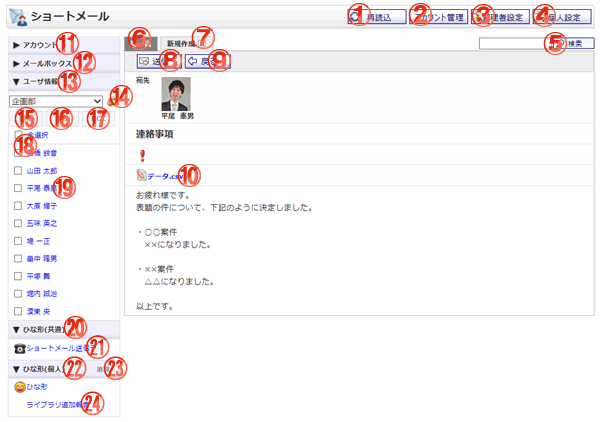

ショートメールの作成の確認を行う画面です。

機能説明
再読込ボタンショートメール一覧を再読込します。再読込が終了すると選択されているメールボックスのショートメール一覧を表示します。 |
アカウント管理ボタン個人設定のアカウントの管理画面へ遷移します。 |
|---|---|
管理者設定ボタン管理者設定画面へ遷移します。 |
個人設定ボタン個人設定画面へ遷移します。 |
検索ボタン入力されたキーワードを元に詳細検索画面へ遷移します。 |
メールボックス切り替え表示されているメールボックスのショートメール一覧が表示されます。 |
メール削除ボタン作成中のメールの削除確認画面がポップアップで表示されます。削除確認画面で「はい」ボタンをクリックすると作成中のメールが削除されます。 |
送信ボタンショートメールの送信完了画面がポップアップ表示されます。入力内容に不備がある場合エラーメッセージが表示されます。 |
戻るボタン遷移元の画面へ遷移します。 |
添付ファイル添付ファイルをダウンロードします。 |
アカウント一覧切り替えクリックするとアカウント一覧が表示されます。 |
メールボックス一覧切り替えクリックするとメールボックス一覧が表示されます。 |
ユーザ情報詳細切り替えクリックするとユーザ情報詳細が表示されます。
|
グループボタンポップアップでグループ選択画面が開きます。 |
宛先ボタンチェックボックスで選択したユーザを宛先に設定し、作成画面に反映します。 |
CCボタンチェックボックスで選択したユーザをCCに設定し、作成画面に反映します。 |
BCCボタンチェックボックスで選択したユーザをBCCに設定し、作成画面に反映します。 |
全選択チェックボックスチェックをつけると、全てのユーザのチェックボックスにチェックが付きます。チェックを外すと、全てのユーザのチェックボックスのチェックが外れます。 |
ユーザリンク選択したユーザを宛先に設定し、新規作成画面を開きます。 |
ひな形（共通）一覧切り替えクリックするとひな形（共通）一覧が表示されます。 |
ひな形リンク選択したひな形を作成画面に反映します。 |
ひな形(個人)一覧切り替えクリックするとひな形(個人)一覧が表示されます。 |
ひな形追加リンクひな形一覧画面へ遷移します。 |
ひな形リンク選択したひな形を作成画面に反映します。 |
表示・入力項目説明
宛先・CC・BCC
宛先・CC・BCCに選択したユーザ名を表示します。
件名
件名を表示します。
マーク
マークを表示します。
本文
本文を表示します。
添付
添付するファイルを表示します。